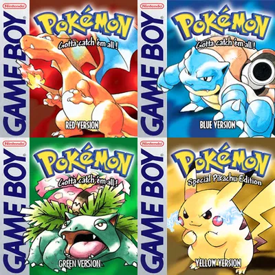
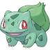
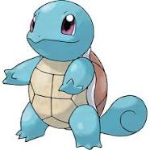
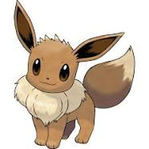

| Starter Pokemon of Generation 1 |
| Home |
Generation 2 |
Generation 3 |
|  Bulbasaur |
 Squirtle |
 Charmander Charmander |
| Bulbasaur is one of the first three starter pokemon in the entire game. It is also number #001 in the pokedex. It is a grass and poison type pokemon, and is known as the Seed pokemon. It’s average height is 2’04" with an average weight of 15.2 lbs. At level 16 it evolves into Ivysaur, then at level 32 evolves into Venusaur. Bulbasaur is one of the few pokemon to have access to a mega evolution at the end of its evolutionary chain. |
Squirtle is one of the first three starter pokemon in the entire game. It is also number #007 in the pokedex. It is a Water type pokemon, and is known as the Tiny Turtle Pokemon. It’s average height is 1’08" with an average weight of 19.8 lbs. At level 16 it evolves into Wartortle, then at level 32 evolves into Blastoise. Squirtle is one of the few pokemon to have access to a mega evolution at the end of its evolutionary chain. |
Charmander is one of the first three starter pokemon in the entire game. It is also number #004 in the pokedex. It is a fire type pokemon, and is known as the Lizard pokemon. It’s average height is 2’00" with an average weight of 18.7 lbs. At level 16 it evolves into Charmeleon, then at level 32 evolves into Charizard. Charmander is one of the few pokemon to have access to a mega evolution at the end of its evolutionary chain. It is also the only pokemon with an evolution chain that has 2 different mega evolutions, with the only other pokemon to have 2 mega evolutions being the Legendary Mewtwo |
 Pikachu Pikachu |
Eevee |
|
| Pikachu is a special starter pokemon from generation 1. It is only available as the starter pokemon in the games Pokemon Yellow and Let’s Go Pikachu, and is the only starter pokemon that you can get from the game. Although the other starters can be caught they cant be chosen as your starter. Pikachus is an electric type pokemon and is known as the Mouse pokemon. It is Nintendos Flagship pokemon. On average its height is 1’04" and weight is 13.2 lbs. Using a thunderstone at anytime on pikachu will cause it to evolve into Raichu. It is the only Starter Pokemon from the Core Games that has a previous evolution, Pichu evolves into pikachu when its Happiness stat is high enough. And although it is a different Pokemon Pikachu also has an alolan form which is very different from the standard pikachu |
Eevee is a special starter pokemon from generation 1. It is only available as a starter in Pokemon Lets go Eevee, and is the only starter pokemon you can get in the game. Although the other starters can be caught they cant be chosen as your starter. Eevee is a normal type pokemon and is known as the Evolution Pokemon. Eevee has the most possible evolutions of any pokemon being able to evolve into 8 different forms. With a waterstone it evolves in a Vaporeon, with an electric stone it turns into Jolteon, With a firestone it becomes Flareon. If Eevee is leveled up with a high enough friendship in an area with a Moss rock or an area with an Ice rock it will evolve into a Leafeon or Glaceon near the respective rock. If the pokemon is not near one of the above rocks, then depending on time of day and wether the player has a moon shard or sun shard, will turn into one of two pokemon. It evolves into Umbreon during the night or if the player has a moon shard in their bag, and during the daytime or with a sun shard it will evolve into Espeon. Finally If it’s happiness is high enough, the pokemon has 2 levels of affection, is not near one of the mentioned stones and has a fairy type move, then Eevee will evolve into Sylveon. On average Eevee sits at a height of 1’00" and a weight of 14.3 lbs.
|